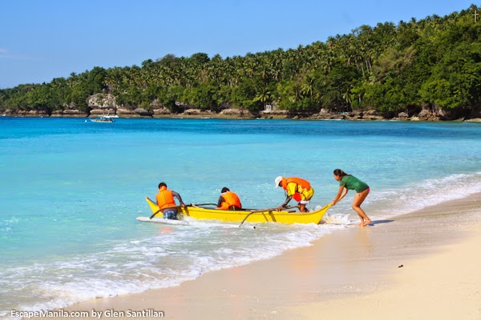
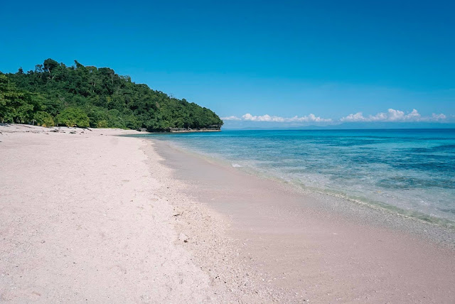
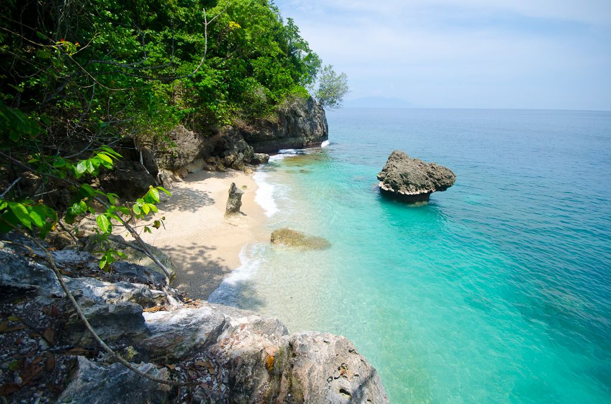
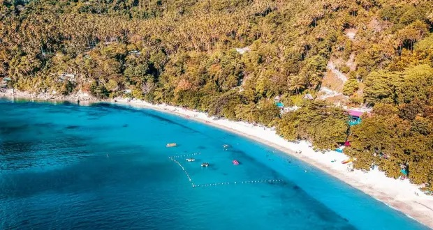
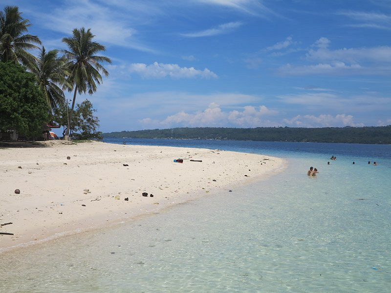
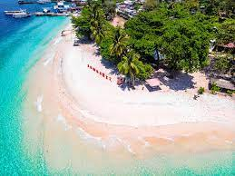

Top 5
Samalan Camp and Sea
 Samalan Camp and Sea-Are you longing for a vacation adventure that is far from the conventional experience offered by commercialized resorts? Then Samal Camp Park will truly ignite your interest in visiting the place.
Nestled in a beautiful cove in Baranggay San Remigio of Kaputian District in the southern most portion of Samal Island, Samalan Camp & Sea which is formerly known and named as Samal Camp Park, takes pride of its 300 metre white-sand beach rich in colourful stones and corals and most of all well-safeguarded marine life and pristine crystal-clear azure waters. See more in Samalan Camp and Sea
Top 4
Gumasa Beach


Gumasa Beach-A four hour’s drive Davao City, this beach is a part of the laid-back town on Sarangani’s eastern shore that is blessed with beautiful beaches.
This white sand beach has been referred to as the small boracay of Mindanao or Boracay of South by the locals for years because of the quality of the sand, crystal clear-waters and uncrowded shores.
Gumasa beach is the party destination that comes alive every summer where the partygoers flock here for the annual Sarangani Bay or Sarbay Festival which happens to be the biggest beach party in Mindanao.
See more in Gumasa Beach
Top 3
Canibad Beach
 Canibad Beach-Canibad Beach is an island destination for all beach bummers who love the ocean so much that they can’t getaway from it.
This beach is ideal for all book lovers who enjoy an afternoon lazy read under the shade of coconut palm tree and with views of the ocean in the farsight.
Collect some seashells and chill at this crescent-shaped beach, wade in its waters to escape the scorching heat and cool down your body.
You can also find a spot nearby where you can experience cliff-diving. See more in Canibad BeachTop 2
Kaputian Beach
 Kaputian Beach-A two hour’s drive from Davao city will get you to one of the most stunning beaches located on Samal island that is known for its white sand and crystal clear blue waters that will be the perfect retreat for you on your vacation.
The Kaputian beach is ideal for a quick getaway from the city and makes for a perfect spot to unwind with views of the white sand shoreline against the blue waters.
You can rent one of the huts or pitch a tent for free here. See more in Kaputian Beach
Top 1
Dahican Beach


Dahican Beach-Located about 4-5 hours from Davao, Dahican is a serene beach that allows you to indulge in various water sport activities, you can spend a day on this beach and enjoy your leisurely hours by reading a book and working on that perfect tan or indulge in other beach games like frisbee and volleyball.
You’ll spot several locals surfing the waves on a surfboard or a skimboard and other just immersing themselves in the tropical beauty of this stunning beach.
See more in Dahican Beach